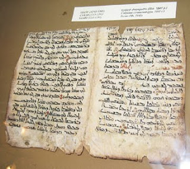
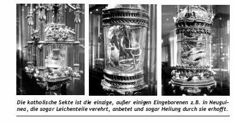
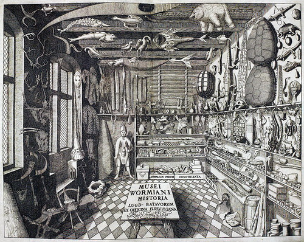
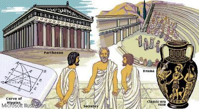
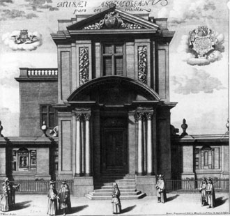

Um museu é, na definição do International Council of Museums (ICOM, 2001), "uma instituição permanente, sem fins lucrativos, a serviço da sociedade e do seu desenvolvimento, aberta ao público e que adquire, conserva, investiga, difunde e expõe os testemunhos materiais do homem e de seu entorno, para educação e deleite da sociedade".
Apesar da origem clássica da palavra museu - do grego mouseion - a origem dos museus como locais de preservação de objetos com finalidade cultural é muito mais antiga. Desde tempos remotos o homem se dedica a colecionar objetos, pelos mais diferentes motivos. No Paleolítico os homens primitivos já reuniam vários tipos de artefatos, como o provam achados em tumbas. Porém, um sentido mais próximo do conceito moderno de museu é encontrado somente no segundo milênio a.C., quando na Mesopotâmia se passou a copiar inscrições mais antigas para a educação dos jovens. Mais adiante, em Ur, os reis Nabucodonosor e Nabonido se dedicaram à coleção de antiguidades, e outra coleção era mantida pelos sacerdotes anexa à escola do templo, e onde cada obra era identificada com uma cartela, semelhante ao sistema expositivo atual.
Ao longo da Idade Média a noção de museu quase desapareceu, mas o colecionismo continuou vivo. Por um lado os acervos de preciosidades eram considerados patrimônio de reserva a ser convertido em divisas em caso de necessidade, para financiamento de guerras ou outras atividades estatais; outras coleções se formaram com objetos ligados ao culto cristão, acumulando-se em catedrais e mosteiros quantidades de relíquias de santos, manuscritos iluminados e aparatos litúrgicos em metais e pedras preciosas . No Renascimento, com a recuperação dos ideais clássicos e a consolidação da humanismo, ressurgiu o colecionismo privado através de grandes banqueiros e comerciantes, integrantes da burguesia em ascensão, que financiavam uma grande produção de arte profana e ornamental e se dedicavam à procura de relíquias da Antiguidade. Algumas coleções se tornaram célebres pela sua riqueza, como a dos Medici, em Florença; reis, nobres e burgueses abastados de toda a Europa competiam na propaganda de suas coleções e mantinham círculos de eruditos em arte, filosofia e história em seu redor, onde se debateram ideias influentes e se conceberam novos métodos educativos, como o academismo
 Entre os séculos XVI e XVII, com a expansão do conhecimento do mundo propiciado pelas grandes navegações, se formaram na Europa inúmeros gabinetes de curiosidades, coleções altamente heterogêneas e assistemáticas de peças das mais variadas naturezas e procedências, incluindo fósseis, esqueletos, animais empalhados, minerais, curiosidades, aberrações da natureza, miniaturas, objetos exóticos de países distantes, obras de arte, máquinas e inventos, e toda a sorte de objetos raros e maravilhosos. Tais gabinetes tiveram um papel importante na evolução da história e da filosofia natural especialmente ao longo do século XVII. Na mesma época proliferaram as galerias palacianas, dedicadas à exposição de esculturas e pinturas. Mas tanto os gabinetes como as galerias ainda estavam essencialmente dentro dos círculos privados, inacessíveis à população em geral. Movidas por interesses científicos foram fundadas inúmeras sociedades e instituições, como os jardins botânicos de Pisa (1543) e o de Pádua (1545), a Real Sociedade de Londres (1660) e a Academia de Ciências de Paris (1666), que reuniam suas próprias coleções.
Na Grecia antiga
Na Grécia Antiga o museu era um templo das musas, divindades que presidiam a poesia, a música, a oratória, a história, a tragédia, a comédia, a dança e a astronomia. Esses templos, bem como os de outras divindades, recebiam muitas oferendas em objetos preciosos ou exóticos, que podiam ser exibidos ao público mediante o pagamento de uma pequena taxa. Em Atenas se tornou afamada a coleção de pinturas que era exposta nas escadarias da Acrópole no século V a.C.
Na modernidade
 Nessa tendência, apareceu em Basileia em 1671 o primeiro museu universitário, e na Inglaterra, em 1683, aquele que é considerado o primeiro museu moderno com objetivo declarado de educar o público, o Museu Ashmolean, criado pela Universidade de Oxford. Seu acervo era eclético e se assemelhava aos antigos gabinetes de curiosidades, procedente de várias partes do mundo, reunido pela família Tradescant e previamente exibida em sua casa de Londres